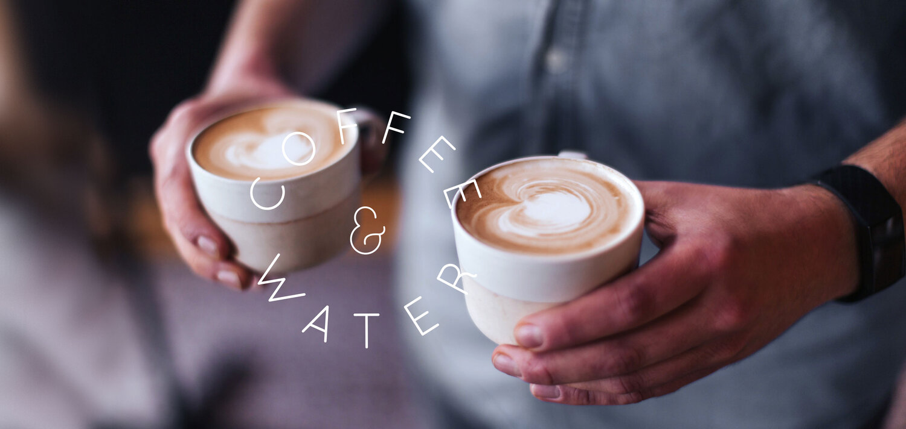

Coffee☕
A cup of coffee can complete your day!

Types of Coffee Drinks
Latte, americano, affogato…it's crazy all that you can do with a few small
beans. Whether you're a coffee newbie or you consider yourself a coffee
connoisseur, there are so many types of coffee drinks to discover. Here
are some of the most popular types ordered by coffee lovers nationwide.
learn more on Taste of Home